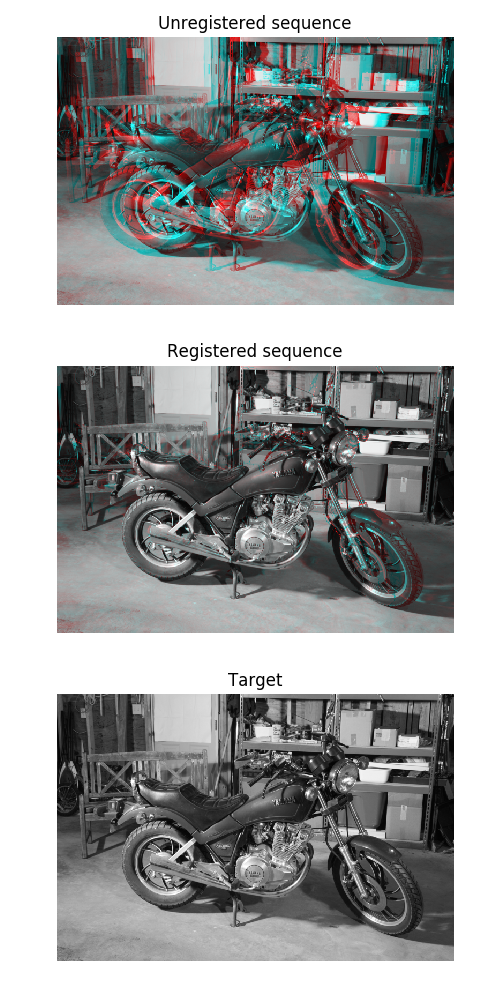

Source
SourceNote
Click here to download the full example code or to run this example in your browser via Binder
Registration using optical flow¶
Demonstration of image registration using optical flow.
By definition, the optical flow is the vector field (u, v) verifying image1(x+u, y+v) = image0(x, y), where (image0, image1) is a couple of consecutive 2D frames from a sequence. This vector field can then be used for registration by image warping.
To display registration results, an RGB image is constructed by assigning the result of the registration to the red channel and the target image to the green and blue channels. A perfect registration results in a gray level image while misregistred pixels appear colored in the constructed RGB image.
import numpy as np
from matplotlib import pyplot as plt
from skimage.color import rgb2gray
from skimage.data import stereo_motorcycle
from skimage.transform import warp
from skimage.registration import optical_flow_tvl1
# --- Load the sequence
image0, image1, disp = stereo_motorcycle()
# --- Convert the images to gray level: color is not supported.
image0 = rgb2gray(image0)
image1 = rgb2gray(image1)
# --- Compute the optical flow
v, u = optical_flow_tvl1(image0, image1)
# --- Use the estimated optical flow for registration
nr, nc = image0.shape
row_coords, col_coords = np.meshgrid(np.arange(nr), np.arange(nc),
indexing='ij')
image1_warp = warp(image1, np.array([row_coords + v, col_coords + u]),
mode='nearest')
# build an RGB image with the unregistered sequence
seq_im = np.zeros((nr, nc, 3))
seq_im[..., 0] = image1
seq_im[..., 1] = image0
seq_im[..., 2] = image0
# build an RGB image with the registered sequence
reg_im = np.zeros((nr, nc, 3))
reg_im[..., 0] = image1_warp
reg_im[..., 1] = image0
reg_im[..., 2] = image0
# build an RGB image with the registered sequence
target_im = np.zeros((nr, nc, 3))
target_im[..., 0] = image0
target_im[..., 1] = image0
target_im[..., 2] = image0
# --- Show the result
fig, (ax0, ax1, ax2) = plt.subplots(3, 1, figsize=(5, 10))
ax0.imshow(seq_im)
ax0.set_title("Unregistered sequence")
ax0.set_axis_off()
ax1.imshow(reg_im)
ax1.set_title("Registered sequence")
ax1.set_axis_off()
ax2.imshow(target_im)
ax2.set_title("Target")
ax2.set_axis_off()
fig.tight_layout()
plt.show()
Total running time of the script: ( 0 minutes 3.905 seconds)